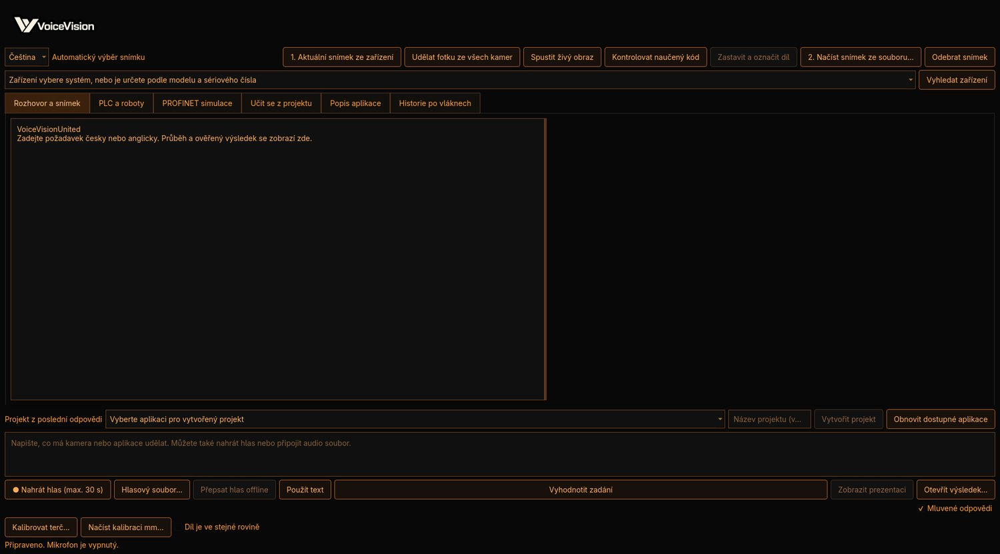

Zadání a kontext
Popište záměr v chatu a připojte obrazový podklad. Studio zpřístupní příslušné nástroje pro další práci.
Principy VVP PLATFORMO projektu ›
PLATFORMO projektu ›VoiceVision Studio spojuje asistovanou přípravu inspekční úlohy s přímou prací se snímky a nástroji. Každý požadavek směřuje přes sdílené runtime příkazy.

Popište záměr v chatu a připojte obrazový podklad. Studio zpřístupní příslušné nástroje pro další práci.
Principy VVPProhlížejte snímek, přibližujte detail a vyznačte oblast, které se má úloha věnovat.
Práce se snímkemPřejděte k přímým ovládacím prvkům pro nastavení a operace dostupné z příslušného adaptéru.
Adaptéry zařízení
Studio předává zvolené operace runtime a zobrazuje jejich potvrzené výsledky. Historie a stav pomáhají sledovat, co se v rámci relace skutečně změnilo.
Samotný text zadání není potvrzením provedení. Dostupnost nástroje i míra potvrzení závisí na konkrétním adaptéru; Studio nepředstírá úspěšné vyhodnocení bez odpovídajícího výsledku.
Technické podkladyVVP rozděluje pracovní postup na srozumitelné části. U každého kroku záleží na zdroji dat, vybraném nástroji a potvrzení, které skutečně vrátí runtime nebo zařízení.
Řešení VVP začíná u obrazu a pokračuje podle potvrzených možností zařízení.